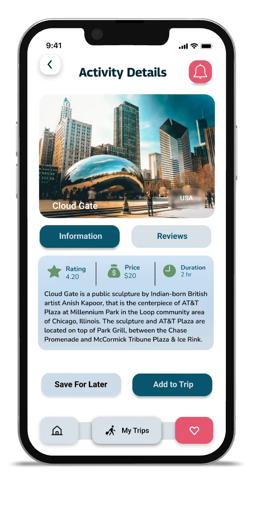

Group itinerary building
Every approved activity drops into a shared, visual itinerary. The plan assembles itself from group decisions, so no single person owns the spreadsheet.
ux case study · general assembly uxdi · 2022
Group trips die in the group chat. We designed a mobile app where the planning itself is the fun part: shared itineraries, gamified voting, and local discovery.
Planning a trip with friends means one exhausted organizer and a hundred unread messages. Why does something fun feel like work?
Loql is a concept for travelers who want authentic, local experiences without the coordination pain. The bet: if a group can see options, vote on them, and watch an itinerary assemble itself, planning stops being a chore one person absorbs and becomes something the group actually does together.
As lead designer I owned the research plan, the feature strategy, and the mobile design language, working alongside two teammates through a full double diamond.
We started wide: a UX audit of existing travel tools, a competitive analysis of their group features, a screener survey, and moderated interviews with people who had recently planned group trips.
We condensed the research into Jessica: 30, a biologist in New York, planning an escape with friends. She stays in rentals to feel local, hunts for activities across half a dozen apps, and ends up the default organizer because nobody else opens the spreadsheet.
How might we make group planning feel shared, flexible, and fun instead of one person's unpaid job?
Three features carried the concept, each mapped directly to a research finding.
Every approved activity drops into a shared, visual itinerary. The plan assembles itself from group decisions, so no single person owns the spreadsheet.
Activities become cards the group swipes and votes on. Consensus is visible in real time, which turns the most painful part of planning into the most social one.
A short setup captures each traveler's budget, pace, and interests, so recommendations and votes start from what the whole group actually wants.
Want to feel the voting concept? Try the interactive demo built for this site.
Warm sunset tones bring the energy; ocean blues keep it calm and trustworthy. Rounded, minimal icons and generous tap targets keep the UI out of the way. This palette and type system are rendered live in code below, not screenshotted.
We built the full flow in Figma at high fidelity and put it in front of users in moderated sessions: find an activity, vote with the group, watch the itinerary update.

Loql taught me that the hardest interface in a social product is the group itself. The design work that mattered was not the screens; it was deciding what the group sees together, what stays individual, and how consensus becomes visible without pressure.
It is also where I learned to argue from evidence. Every feature on this page traces to a finding, and the ones that did not trace got cut.